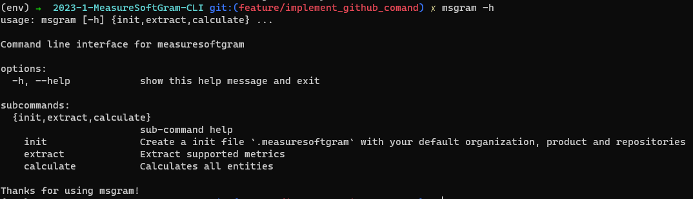
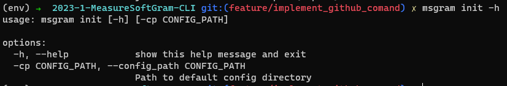
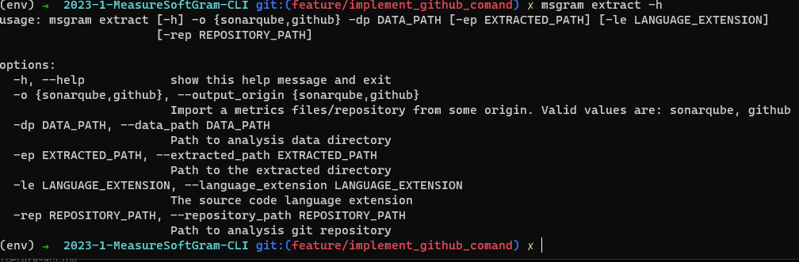
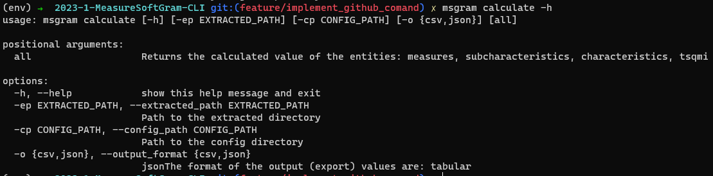

CLI
1. Versionamento
| Versão | Data | Descrição | Autor(es) |
|---|---|---|---|
| 0.1 | 23/05/2023 | Criação do documento | Jonathan e Marcos |
| 0.2 | 26/05/2023 | Revisão do documento | Paulo Batista |
| 0.3 | 09/07/2023 | Adição de comando do parser | Luis Marques |
2. Manual de Uso da CLI
2.1 O que é o microsserviço CLI
Esse microsserviço dentro do produto MeasureSoftGram se trata da interface de linha de comandos, que utiliza o pacote de cálculos da Core por trás dos panos, para gerar análises de qualidade dos repositórios. Se trata de um pacote Pypi totalmente independente, que tem como foco a utilização local (sem necessidade de internet).
2.2 Como executar a CLI
Para iniciar a utilização da CLI, baixe o pacote do repositório Pypi.
pip install msgram
Agora todas as funcionalidades disponíveis da CLI do MeasureSoftGram estão disponíveis pelo seguinte comando: msgram
msgram -h

2.3 Comandos existentes na CLI
Como demonstrado na foto anterior, a CLI do MeasureSoftGram possui três comandos:
2.3.1 msgram init
Responsável por inicializar os arquivos e pastas de configuração que são utilizados nos comandos seguintes. O arquivo msgram.json de configuração das entidades é criado nessa etapa.
msgram init -h

Exemplo de configuração de qualidade gerado pelo init:
{
"characteristics": [
{
"key": "reliability",
"weight": 50,
"subcharacteristics": [
{
"key": "testing_status",
"weight": 100,
"measures": [
{
"key": "passed_tests",
"weight": 33,
"min_threshold": 0,
"max_threshold": 1,
},
{
"key": "test_builds",
"weight": 33,
"min_threshold": 0,
"max_threshold": 300000,
},
{
"key": "test_coverage",
"weight": 34,
"min_threshold": 60,
"max_threshold": 100,
},
],
}
],
},
{
"key": "maintainability",
"weight": 50,
"subcharacteristics": [
{
"key": "modifiability",
"weight": 100,
"measures": [
{
"key": "non_complex_file_density",
"weight": 33,
"min_threshold": 0,
"max_threshold": 10,
},
{
"key": "commented_file_density",
"weight": 33,
"min_threshold": 10,
"max_threshold": 30,
},
{
"key": "duplication_absense",
"weight": 34,
"min_threshold": 0,
"max_threshold": 5,
},
],
}
],
}
2.3.1.1 thresholds
Através do arquivo de configuração é possível modificar os valores de referência mínimo e máximo das medidas do modelo, permitindo a personalização das variáveis de acordo com a preferência dos usuários.
Para modificar os thresholds basta adicionar a chave thresholds no json de configuração demonstrado acima e passando como valor o nome dos thresholds que deseja modificar e seus respectivos valores como mostrado abaixo.
{
"key": "duplication_absense",
"weight": 34,
"min_threshold": 0,
"max_threshold": 5,
}
````
**OBS:**
1. Caso o valor não for passado o msgram irá utilizar os valores padrões.
2. O threshold mínimo não pode ser maior, ou igual, o threshold máximo.
3. Os valores mínimos e máximos também são utilizados para interpolação, portanto alguns são limitados entre 0 e 100 e outros são fixos.
3. Segue os valores padrões de cada threshold:
```json
{
"min_complex_files_density": 0, #is complex if file cyclomatic complexity divided by number of functions is greater than max
"max_complex_files_density": 10,
"min_comment_density": 10, #considers the files with comment density between min and max for the measure
"max_comment_density": 30,
"min_duplicated_lines": 0, #is duplicated if file is over max
"max_duplicated_lines": 5.0,
"min_passed_tests": 0, #only used for interpolation, do not modify
"max_passed_tests": 1,
"min_fast_test_time": 0, #the test is fast if time is bellow max
"max_fast_test_time": 300000,
"min_coverage": 60, #consider files with coverage above min for the measure
"max_coverage": 100
}
````
#### 2.3.2 msgram extract
<p align="justify" style="text-indent: 20px">
Responsável por extrair os dados advindos dos analisadores de código (parsers). Até a versão 1.0.0, o MeasureSoftGram suporta as seguintes entidades:
</p>
??? info "Características disponíveis"
- Reliability
- Maintainability
??? info "Subcaracterísticas disponíveis"
- testing_status
- modifiability
??? info "Medidas disponíveis" - passed_tests - tests_build - test_coverage - non_complex_file_density - commented_file_density - duplication_absense
??? info "Métricas disponíveis" - tests [sonarqube] - tests_failures [sonarqube] - test_errors [sonarqube] - test_execution_time [sonarqube] - coverage [sonarqube] - functions [sonarqube] - complexity [sonarqube] - comment_lines_density [sonarqube] - duplicated_lines_density [sonarqube]
```sh
msgram extract -h

2.3.3 msgram calculate
Responsável por calcular, através do msgram-core (versão empacotada dos cálculos), a qualidade dos arquivos extraídos. Também, por esse comando o MeasureSoftGram extrai os dados (CSV ou JSON) calculados.
msgram calculate -h
